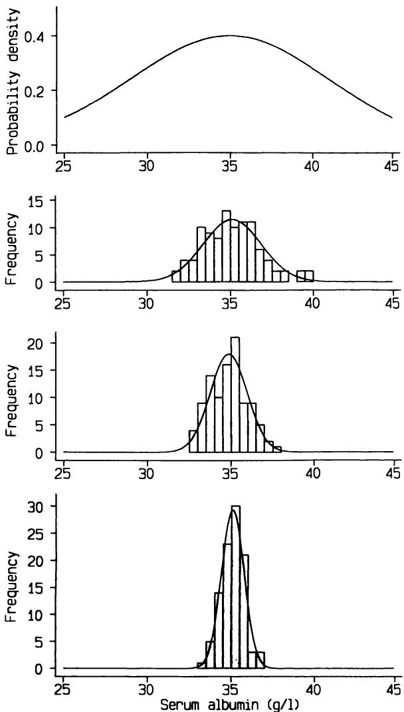
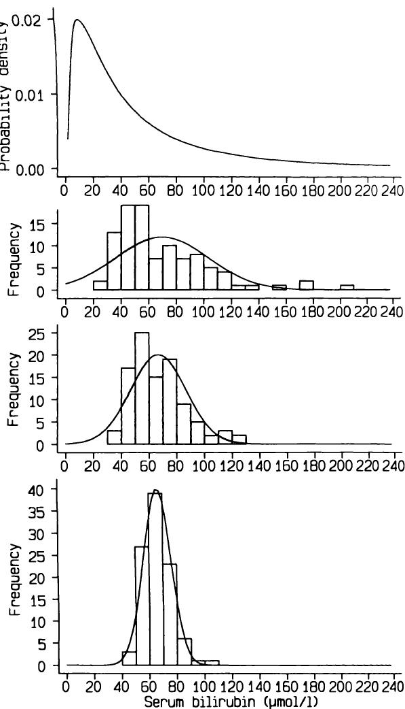
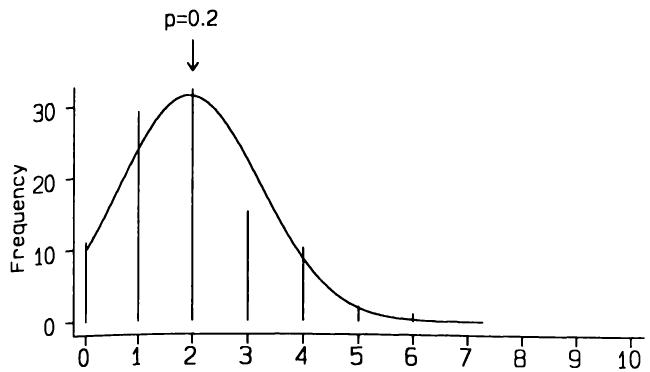
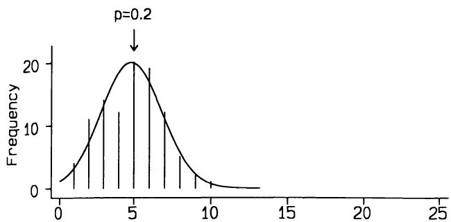
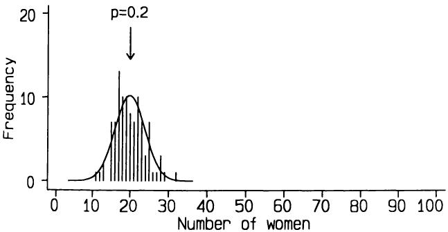
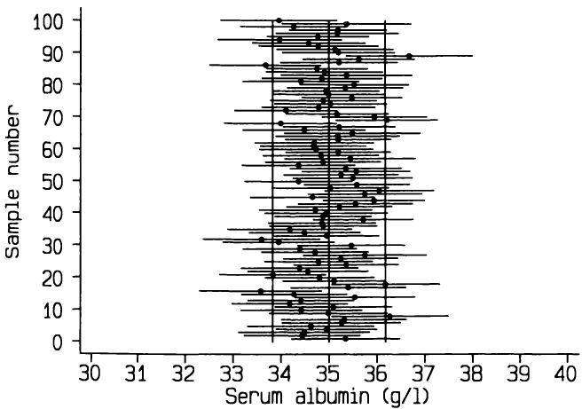
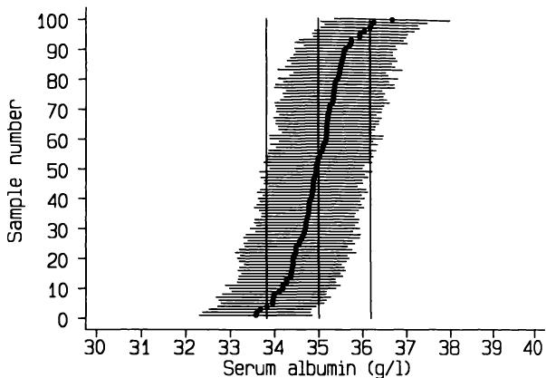

统计分析的8条原则 8 Principles of statistical analysis
统计学的一个独特功能是：它使科学家能够对其结论的不确定性进行数值评估。
A distinctive function of statistics is this: it enables the scientist to make a numerical evaluation of the uncertainty of his conclusion.
Snedecor（1950）
Snedecor (1950)
8.1 引言 8.1 INTRODUCTION
当我们为研究目的分析医学数据时，目的是将从一组个体样本中获得的发现推广到所有类似个体的总体中。我们在动物和实验室研究以及许多流行病学研究中最能清楚地看到这一点，这些数据无法与具体个体对应，但这同样适用于病例对照研究、临床试验，乃至临床研究整体。虽然从临床角度我们也可能关注每个个体，但研究通常旨在总结许多个体的经验以得出一般结论。因此，统计学的主要理念之一是—统计分析的目标是利用从样本个体获得的信息，对相关总体进行推断。
When we analyse medical data for research purposes the intention is to extrapolate the findings from a sample of individuals to the population of all similar individuals. We see this most clearly in animal and laboratory studies as well as in much epidemiological research, where the data cannot be identified with individual subjects, but it applies equally to case- control studies, clinical trials and indeed to clinical research in general. While we may also be interested in each individual from a clinical point of view, research is usually aimed at summarizing the experience of many individuals to draw general conclusions. Thus one of the main ideas of statistics is this - the aim of statistical analysis is to use the information gained from a sample of individuals to make inferences about the relevant population.
在大多数研究中，会收集一些数据用于描述性目的，例如关于被研究对象的人口统计学和临床特征的信息。数据分析的第一步是描述这些基本数据，第三章中介绍了用于此目的的简单描述方法。在观察性研究中，大多数甚至全部数据都属于此类。干预性研究，包括临床试验和实验室实验，明确是不同观察组之间的比较。我们如何比较这些数据集，尤其是在希望推广研究结果的情况下？
In most research studies some data are collected for descriptive purposes, for example information about the demographic and clinical characteristics of subjects being studied. The first step in the analysis of a set of data is to describe such basic data, and simple descriptive methods for this purpose were described in Chapter 3. In observational studies most if not all the data will be of this type. Intervention studies, which include clinical trials and laboratory experiments, are explicitly comparisons between different sets of observations. How do we compare sets of data, especially in view of the desire to generalize the findings？
接下来的七章将介绍大量针对不同研究设计和数据类型的统计分析方法。所考虑的大多数问题涉及对同类型观察组之间的比较，或在同一组个体内不同观察之间的关联。尽管医学问题和统计解决方案种类繁多，但所有方法都贯穿两种基本的统计分析途径—估计和假设检验。
The following seven chapters describe a large number of statistical methods for analysing data of various types for different research designs. The majority of the problems considered involve making comparisons between groups of observations of the same type or relating different observations within one group of individuals. Despite the enormous variety of medical problems and statistical solutions there are two basic approaches
接下来的章节将讨论这两种方法背后的原理，并对它们进行比较。本章的思想是理解统计思维的基础，因此对于后续章节的理解至关重要。
to statistical analysis that run through all of these methods - estimation and hypothesis testing. The next sections will discuss the principles behind each of these methods, and then they will be compared. The ideas in this chapter are fundamental to an appreciation of statistical thinking and thus to an understanding of the subsequent chapters.
8.2 抽样分布 8.2 SAMPLING DISTRIBUTIONS
本章最重要的概念已在4.3节介绍，即我们利用样本中获得的结果作为对相关总体真实情况的最佳估计。例如，如果我们发现一种新的银屑病治疗比标准治疗更能缓解患者症状，或男性血清胆固醇高于女性，或某种温度与光照组合能优化实验室细胞生长，那么我们期望这些结论在总体中同样成立。要使这种解释有效，样本必须具有代表性。本章介绍的方法展示了如何量化证据的强度或其不确定性。
The most important idea, already introduced in section 4.3, is that we take the results obtained in the sample and use them as our best estimate of what is true for the relevant population. So, for example, if we find that a new treatment for psoriasis relieves the symptoms of patients more often than a standard treatment, or that serum cholesterol is higher in men than women, or that a certain combination of temperature and light optimizes cell growth in a laboratory experiment, then in each case we would expect that the same is likely to be true in the population. For this interpretation to be valid the sample must be representative of the population. The methods described in this chapter show how to quantify the strength of the evidence, or its uncertainty.
正如我们在第4章中看到的，来自正态分布的小随机样本的分布可能完全不像正态分布。同样，随机样本的均值可能仅因偶然因素而与总体均值不同，尽管我们自然期望样本均值与总体均值相当接近。我们使用样本均值作为总体均值的估计值，因为这是我们拥有的最佳信息，但单个样本的均值作为总体值估计的准确性如何？我们需要一种方法来评估估计的不确定性。解决这个问题的一种方法是假设我们可以从总体中抽取许多相同大小的样本。我们能说这些样本均值相对于总体（即真实）均值的变异性如何吗？
As we saw in Chapter 4, small random samples from a Normal distribution may have a distribution that is not at all like a Normal distribution. Similarly, the mean of a random sample may differ from the population mean, just by chance, although naturally we expect the sample mean to be quite close to the population mean. We use the sample mean as an estimate of the population mean, because that is the best information we have, but how good is the mean of a single sample as an estimate of the population value？ We need a way of assessing the uncertainty associated with our estimate. One way to approach this problem is to suppose that we could take many samples of a given size from the population. What can we say about the variability of the means of these samples in relation to the population (i.e. true) mean？
在第3章中，标准差被引入作为一组观测值围绕其均值的变异性的度量。测量假设样本均值围绕真实均值的变异性显然是一个类似的问题。事实证明，我们可以对多个样本均值的性质做出一些令人惊讶的强有力的陈述，并且可以利用这些信息来回答上述问题，即当我们仅取一个样本时，关于不确定性我们能说些什么。
In Chapter 3 the standard deviation was introduced as a measure of the variability of a set of observations around their mean. Measuring the variability of hypothetical sample means about the true mean is clearly a similar problem. It turns out that we can make some surprisingly strong statements about the properties of the means of several samples, and that we can use this information to answer the question posed above, namely what we can say about uncertainty when we have taken only one sample.
直观上，样本均值的变异性应具有以下特性：
It is intuitively reasonable that the variability of sample means will have the following properties:
【1】大样本的均值变异性小于小样本的均值变异性；
- it will be less among the means of large samples than small samples;
【2】样本均值的变异性小于总体中个体观测值的变异性； - it will be less than the variability of the individual observations in the population;
【3】样本均值的变异性随着总体中个体值变异性（标准差）的增加而增加。
3. it will increase with greater variability (standard deviation) among the individual values in the population.
以上这些确实都成立。可以用数学方法证明，随机样本均值的分布具有以下性质：
All of these are indeed true. It can be shown mathematically that the distribution of the means of random samples has the following properties:
(i) 样本均值分布的期望值等于总体均值。换句话说，样本均值的平均值就是总体均值。此外，样本方差的期望值是总体方差。
(i) The expected value of the mean of the distribution of the sample means is the same as the population mean. In other words, on average the mean of a sample will be the mean of the population. Further, the expected value of the variance of a sample is the variance of the population.
(ii) 多个样本均值的标准差的期望值是 ，其中 是总体中变量的标准差， 是每个样本的大小。这个量 被称为均值的标准误，以区别于观测值的标准差。我们可以用单个样本中观察到的标准差 代替 来估计标准误。标准误的解释和使用将在第8.4节讨论。
(ii) The expected value of the standard deviation of the means of several samples is where is the standard deviation of the variable in the population and is the size of each sample. The quantity is known as the standard error of the mean, to distinguish it from the standard deviation of the observations. We can estimate the standard error from a single sample using the observed standard deviation in that sample, , in place of . The interpretation and use of the standard error are discussed in section 8.4.
(iii) 如果总体数据的分布是正态分布，那么样本均值的分布也将是正态分布。更为重要且有些令人惊讶的是，只要样本足够大，无论总体变量的分布如何，样本均值的分布都将近似正态分布。这个重要结果被称为中心极限定理，它是许多主要统计方法的基础。有时我们关注的是一组值的和而非均值。两者仅在除以观测值数量上不同，因此中心极限定理同样适用于和与均值。
(iii) The distribution of the sample means will be Normal if the distribution of the data in the population is Normal. Further, and somewhat remarkably, the distribution of the sample means will be nearly Normal whatever the distribution of the variable in the population as long as the samples are large enough. This important result is known as the central limit theorem. It underlies many of the main statistical methods. Sometimes we will be concerned with the sum of a set of values rather than the mean. The two differ only with respect to division by the number of observations, so the central limit theorem applies equally to sums and means.
实际上，当数据呈单峰且不特别偏斜的分布时，(iii) 中关于样本量限制的条件并不重要。相反，只要样本量足够大，样本均值的分布无论数据的分布如何都将趋于正态。一般来说，数据越接近正态，重复抽样中均值近似正态分布的假设就越合理。如果我们能够假设均值服从正态分布，那么就可以轻松应用基于正态分布的方法（第4章介绍）来表示样本均值作为总体均值估计的不确定性。我将在下一节中回到这个问题。
In practice, the sample size restriction in (iii) is not relevant when the data have a distribution that is unimodal and not particularly asymmetric. Conversely, if the sample size is large enough the distribution of means will be Normal regardless of the distribution of the data. In general, the more Normal the data, the more reasonable will be the assumption that the mean will itself be Normally distributed in repeated sampling. If we can assume a Normal distribution for the mean it is easy to use the methods based on the Normal distribution (introduced in Chapter 4) to indicate the uncertainty of a sample mean as an estimate of the population mean. I shall return to this problem in the next section.
前述讨论主要涉及总体样本的均值，但(i)至(iii)的结论同样适用于样本比例。如果我们用1和0表示感兴趣属性的有无，例如是否切除过扁桃体，那么样本中具有该属性的比例即为具有该属性的个体数除以样本量。换言之，属性比例是样本中1和0的均值，因此上述性质(i)至(iii)同样适用。然而，由于总体中的取值肯定不是正态分布（仅为1或0），性质(iii)仅在大样本时适用。另一种看待比例的方法是，具有该属性的个体数（即样本量乘以）服从二项分布。如第4章所述，二项分布在样本量较大时趋近于正态分布。如果观察到的比例为，样本量为，那么决定其接近正态分布程度的是乘积的大小。
The preceding discussion has related to the mean of a sample from a population, but statements (i) to (iii) also apply to a sample proportion. If we give the values 1 and 0 to indicate the presence or absence of the attribute of interest, for example having had one's tonsils removed, the proportion with the attribute in a sample is the number with the attribute divided by the sample size. In other words, the proportion with the attribute is the mean of the 1s and 0s in the sample, and so properties (i) to (iii) above apply. However, as the population values are certainly not Normal, being either 1 or 0, property (iii) will apply only to large samples. Another way of looking at proportions is that the number with an attribute (which is equal to the sample size times ) will follow a Binomial distribution. As I mentioned in Chapter 4, the Binomial distribution becomes more like a Normal distribution for larger samples. If the observed proportion is and the sample size is , then it is in fact the magnitude of the product that determines the closeness to a Normal distribution.
8.3 样本均值分布的演示 8.3 A DEMONSTRATION OF THE DISTRIBUTION OF SAMPLE MEANS
通过从总体中抽取多个样本，观察均值或比例的分布，可以更直观地理解上述关于均值或比例分布的结论。由于难以找到合适的真实数据，我采用了第6章提到的计算机模拟技术来演示这一过程。
The truth of the above statements about the distribution of means or proportions estimated from several samples can best be appreciated by seeing what actually happens when many samples are taken from a population. It is not easy to find appropriate real data, so to demonstrate what happens I have used computer simulation, a technique mentioned in Chapter 6.
首先考虑总体分布为正态的情况。根据前节(i)和(ii)，我们预期一组随机样本的均值也将服从正态分布，且所有样本均值的标准差应为总体标准差除以。这里的“预期”指的是平均意义上的结果—多组样本仍然会存在抽样变异。
First I shall consider the case where the distribution in the population is Normal. From (i) and (ii) in the previous section we expect that the means of a set of random samples will also have a Normal distribution, and we expect the standard deviation of all the sample means to be the population standard deviation divided by . As usual, by 'expect' we mean that this will happen on average - a set of several samples is still subject to sampling variation.
我以第4章讨论的原发性胆汁性肝硬化（PBC）患者研究为模拟基础。假设所有PBC患者的血清白蛋白值服从均值为、标准差为的正态分布。通过计算机模拟，从该正态分布中随机抽取样本量为10、25和100的样本，研究其均值的分布。图8.1展示了PBC患者总体血清白蛋白的理论正态分布及100个随机样本均值的直方图（样本量分别为10、25和100，直方图显示频数和相对频率）。100个均值的预期标准差分别为、和，即1.90、1.20和0.60。可以看到，观察到的分布较为接近正态分布，
I used the study of patients with primary biliary cirrhosis (PBC) discussed in Chapter 4 as the basis for the simulations. I supposed that among all patients with PBC, which is the population of interest here, serum albumin values have a Normal distribution with a mean of and a standard deviation of . I used computer simulation to study the distributions of samples of sizes 10, 25 and 100 drawn at random from this Normal distribution. Figure 8.1 shows the theoretical Normal distribution of serum albumin in the population of patients with PBC together with histograms of the means of 100 random samples of sizes 10, 25, and 100. (Note that as there were 100 samples the histograms show both frequencies and relative frequencies.) The expected standard deviations of the sets of 100 means are , and respectively, or 1.90, 1.20 and 0.60. It can be seen that the observed distributions are reasonably Normal,

尤其是样本量较大时，其均值和标准差均接近预期值。随着均值数量的增加，直方图将更接近正态分布。
especially for larger samples, and that their means and standard deviations are close to the expected values. The histograms will get nearer to a Normal distribution as the number of means increases.
前节性质(iii)指出，当样本足够大时，即使总体分布非正态，也应观察到类似现象。我们利用PBC试验中的血清胆红素数据进行模拟研究。实际胆红素值分布高度偏斜，均值为，标准差为，但其对数值近似正态分布，均值为3.55，标准差为1.03。假设所有PBC患者的血清胆红素对数值服从均值为、标准差为的正态分布。图8.2展示了相应的原始血清胆红素对数正态分布及从该明显偏斜分布中随机抽取样本量为10、25和100的样本的结果。可以看到，样本均值的分布随着样本量增加而更趋近于正态，但即使样本量为100，均值分布仍略显偏斜。总体值偏斜程度越大，均值近似正态分布所需的样本量越大。
Property (iii) in the previous section stated that for samples large enough we should observe a similar phenomenon even when the population values do not have a Normal distribution. We can study this effect using simulation based on the serum bilirubin data in the PBC trial. The actual bilirubin values had a highly skewed distribution with a mean of and a standard deviation of , but log serum bilirubin had an approximately Normal distribution, with a mean of 3.55 and standard deviation 1.03. I supposed that in the population of all PBC patients log serum bilirubin has a Normal distribution with a mean of and a standard deviation of . Figure 8.2 shows the corresponding Lognormal distribution of raw serum bilirubin values and the results of taking random samples of size 10, 25 and 100 from this markedly skewed distribution. We can see that the distribution of the sample means becomes more nearly Normal as the size of the sample increases, but even for samples of 100 the distribution of means is still slightly asymmetric. The more skewed the population values the larger the sample size needed for the means to have a near Normal distribution.
我们也可以用类似方法研究观察到的比例行为。根据全科医生的咨询数据，英格兰女性哮喘患病率约为0.20（即20%）（Fleming和Crombie，1987）。我们预期，随着样本量增加，一系列随机抽取的英格兰女性样本中哮喘患病比例的分布将趋于正态。
We can study the behaviour of observed proportions in a similar way. On the basis of general practitioner consultations it seems that the prevalence of asthma among women in England is about 0.20 (i.e. ) (Fleming and Crombie, 1987). We would expect that the observed proportions of asthma sufferers in a series of random samples of English women would tend to have a Normal distribution as the sample size is increased.
如第4章所述，样本中具有某属性的个体数服从二项分布。观察比例可视为均值，因此在重复的大样本中，样本比例的分布近似正态。我利用计算机模拟研究了当总体比例为0.2时样本比例的变异。图8.3显示了100个随机样本（样本量分别为10、25和100）中哮喘女性比例的分布。显然，随着样本量增加，分布确实更接近正态分布。二项分布趋近正态分布的速度取决于比例和样本量。比例越接近0或1，二项分布即使在较大样本下也越偏斜。
As discussed in Chapter 4, the number of subjects in a sample who have a particular attribute follows a Binomial distribution. The observed proportion can be considered to be a mean, and thus in repeated large samples we expect the distribution of the sample proportions to be approximately Normal. I used computer simulation to study the variation in the sample proportion when the population proportion is 0.2. Figure 8.3 shows the resulting distributions of the proportion of women suffering from asthma in 100 random samples of size 10, 25 and 100. It is clear that the distribution does indeed become more like a Normal distribution as the sample size increases. The speed with which the Binomial distribution resembles a Normal distribution depends upon the proportion and sample size. The nearer the proportion is to 0 or 1 the more asymmetric is the Binomial distribution even for quite large samples.
这些模拟从经验上验证了上一节中的三个陈述。实际上，我们几乎总是只有一个样本，但因为可以预测如果取多个样本会发生什么，所以我们可以利用单个样本的数值对总体做出有力推断，并量化不确定性。
These simulations have verified empirically the three statements in the previous section. In practice we nearly always have just a single sample, but because we can predict what would happen if many samples were taken we can use values from a single sample to make some strong inferences about the population, and can quantify the uncertainty.




图8.3 显示了在100个随机样本中，样本容量分别为10、25和100时，患哮喘女性的观察分布（概率为0.20）。
Figure 8.3 Observed distributions of the number of women with asthma (probability 0.20) in 100 random samples of sizes 10, 25, and 100.
8.4 估计 8.4 ESTIMATION
我将首先考虑从一组样本中测量数据并希望对总体均值做出结论的情况，然后再考虑与总体中某一感兴趣比例相关的同一问题。
I shall first consider the case where we have taken measurements from a sample of people and wish to draw conclusions about the mean of the population, and then consider the same problem relating to a proportion of interest in the population.
8.4.1 样本均值的标准误 8.4.1 Standard error of a sample mean
图4.5显示，216名PBC患者的血清白蛋白观察值分布接近正态分布。这些值的均值为34.46 g/l，标准差为5.84 g/l。我们能从这个单一样本推断出所有PBC患者总体的血清白蛋白值吗？显然，任何推断都必须基于样本能代表总体的假设，本文所有示例均假设如此。根据8.2节，我们对总体均值和标准差的最佳估计也分别是34.46和5.84 g/l。
Figure 4.5 showed that the distribution of the observed serum albumin values in 216 patients with PBC was close to a Normal distribution. The mean of these values was and the standard deviation was . What can we infer about serum albumin values in the population of all patients with PBC from this single sample？ Clearly any inference must depend on our sample being representative of the population, and I shall make this assumption for all the examples in this section. From section 8.2 our best estimates of the mean and standard deviation in the population are also 34.46 and .
在上一节中我指出，多个样本均值的标准差为 ，其中 是总体标准差，这一点通过模拟得到了验证。样本均值的标准差是一个假设量，因为实际上我们只取一个样本，因此我们称其为均值的标准误（SEM）。虽然其他估计量也有标准误，但均值的标准误通常简称为标准误（SE），因为这样不会引起歧义。标准误这一名称提示了其含义：我们关心的是如何定量衡量均值估计与未知真实总体均值之间的误差大小。
In the previous section I stated that the standard deviation of many sample means will be , where is the standard deviation in the population, and this was demonstrated by simulation. The standard deviation of sample means is a hypothetical quantity, because in practice we take only a single sample, so we give it the different name of the standard error of the mean (SEM). Although there are other types of standard error associated with other estimates, the standard error of the mean is often abbreviated to standard error (SE) as it is not usually ambiguous to do so. The name standard error gives an indication of the interpretation, because we are interested to quantify in some way how good our estimate of the mean is of the true, and unknown, population mean - how large an error might we be making？
血清白蛋白样本均值的标准误为 。我们期望重复取相同大小样本的均值服从均值为34.46 g/l、标准差为0.397 g/l的正态分布。注意，标准误并不是总体中某个量的估计，而是多个样本均值之间变异性的指标，或者说是单一样本均值作为总体均值估计的不确定性度量。随着样本量增加，不确定性减小，这从公式中可见一斑，图8.1也对此进行了展示。在8.4.5节我将展示如何利用标准误构建置信区间。尽管标准误被广泛引用，但它本身是一个较少直接使用的量。
The standard error of the sample mean serum albumin is thus . We would expect the means of repeated samples of the same size to have a Normal distribution with mean and standard deviation . Note that the standard error is not an estimate of any quantity in the population, but an indication of the variability among many sample means or, alternatively, a measure of the uncertainty of a single sample mean as an estimate of the population mean. The uncertainty decreases as the sample size increases, as is apparent from the formula and was demonstrated in Figure 8.1. In section 8.4.5 I shall show how to use the standard error to construct a confidence interval. The standard error itself, although widely quoted, is a less useful quantity.
8.4.2 两个样本均值差异的标准误 8.4.2 Standard error of the difference between two sample means
大多数医学研究是比较性的，因此我们更常关注
Most medical research is comparative, and so we are more often concerned
使用两个或更多样本而非单个样本进行分析。比较两个样本尤其常见，为此我们需要知道两个样本均值差的标准误。
with two or more samples rather than a single sample. Comparing two samples is particularly common, and for this we need to know the standard error of the difference between the means of two samples.
在来自总体且标准差为 的单个样本中，均值的抽样分布方差为 ，因此均值的标准误为 。如果有两个独立样本，则它们均值差的方差是各自方差之和，因此均值差的标准误是各自方差之和的平方根。用数学符号表示，如果两个均值分别是 和 ，则
In a single sample from a population with a standard deviation of the variance of the sampling distribution of the mean is , and so the standard error of the mean is . If we have two independent samples the variance of the difference between their means is the sum of the separate variances, so the standard error of the difference in means is the square root of the sum of the separate variances. In mathematical notation, if the two means are and , then
例如，一项关于急性心肌功能的大型研究发现，1551名男性的平均血尿素氮为 （标准差13），而538名女性的平均值为 （标准差15）（Dittrich 等，1988）。差值为 ，其标准误为
For example, a large study of acute myocardial function found that 1551 men had a mean blood urea nitrogen of (SD 13) while among 538 women the mean was (SD 15) (Dittrich et al., 1988). The difference is , and its standard error is
标准误可用于构建两个独立样本连续变量均值差的置信区间，前提是样本量较大（参见第8.4.5节）。对于小样本，将采用稍有不同的方法，详见第9章。
The standard error can be used to construct a confidence interval for the difference in the means of two independent samples of values of a continuous variable if the samples are large (see section 8.4.5). For small samples a slightly different approach is used, as will be described in Chapter 9.
8.4.3 样本比例的标准误 8.4.3 Standard error of a sample proportion
我曾指出，样本比例在大样本中近似服从正态分布。因此，在样本量足够大的假设下，我们可以通过计算样本比例的标准误来进行近似。如前所述，对于 ，即使样本较小，近似也相当准确。当 和 均大于 时，使用此近似是合理的。例如，对于样本量大于约50的比例在0.1到0.9范围内，近似效果良好；但对于超出此范围的 ，则需要更大的样本量。
I showed that a sample proportion will have an approximately Normal distribution in large samples. We can thus make an approximation by calculating the standard error of a sample proportion under the assumption that the sample size is large enough. As we have seen, for the approximation is quite good even for fairly small samples. It is reasonable to use this approximation when and are greater than . For example, the approximation is good for proportions in the range 0.1 and 0.9 for samples greater than about 50, but for values of outside this range a larger sample is required.
在第4章中给出了二项分布比例 在样本量为 时的标准误为 。利用正态近似，我们预期若总体比例为 ，则同样大小的重复样本中观察到的比例将服从均值为 、标准差为 的正态分布。
The standard error of the Binomial proportion in a sample of size was given in Chapter 4 as . Using the Normal approximation we thus expect that if the population proportion is then in repeated samples of the same size the observed proportions will have a Normal
回到前面的例子，如果在随机抽取的80名女性样本中观察到13人患有哮喘，则我们估计总体中患哮喘女性的比例为 ，其标准误为 。
distribution with mean and standard deviation . Returning to the earlier example, if we observe that 13 of a random sample of 80 women have asthma, then from that sample we would estimate that the proportion of women in the population with asthma is , with a standard error of .
8.4.4 两个比例差的标准误 8.4.4 Standard error of the difference between two proportions
我们可以用与第8.4.2节中两个均值差的标准误相同的方法来计算两个比例差的标准误。如果我们有来自两个独立样本的两个观察比例， 和 ，那么它们差值 的标准误为
We can calculate the standard error of the difference between two proportions in the same manner as that of the difference between two means given in section 8.4.2. If we have two observed proportions, and , from two independent samples, then the standard error of their difference, , is given by
例如，在一项针对青少年的大型研究中，712名男孩中有165人报告他们总是使用安全带，而641名女孩中有91人如此（Maron等，1986）。两个比例分别是0.232和0.142，因此比例差为0.090。差值的标准误为
For example, in a large study of adolescents 165 of 712 boys reported that they always used a seat belt compared with 91 of 641 girls (Maron et al., 1986). The two proportions are 0.232 and 0.142, so the difference in proportions is 0.090. The standard error of the difference is
8.4.5 置信区间 8.4.5 Confidence intervals
我在第8.2节中指出，样本中观察到的均值或比例是总体“真实”值的最佳估计，并且对于大样本，从多个样本获得的值的分布大致呈正态分布。我们可以将样本估计的这些特性与正态分布的已知性质结合起来，了解单一样本估计总体值时的不确定性。我们通过构建置信区间来实现这一点，置信区间是一个我们有信心包含真实值的数值范围。基本思想是，置信区间覆盖了感兴趣统计量的抽样分布的大部分。
I observed in section 8.2 that the mean or proportion observed in a sample is the best estimate of the 'true' value in the population, and that the distribution of the values obtained in several samples would be approximately Normal for large samples. We can combine these features of estimates from a sample with the known properties of the Normal distribution to get an idea of the uncertainty associated with a single sample estimate of the population value. We do this by constructing a confidence interval, which is a range of values which we can be confident includes the true value. The basic idea is that the confidence interval covers a large proportion of the sampling distribution of the statistic of interest.
估计均值的置信区间在均值两侧延伸若干倍的标准误。例如，均值减去3倍标准误到均值加上3倍标准误的区间是一个99.7%的置信区间，因为从正态分布中取值距离均值3个或更多标准差的概率为（如第4.5节和表B2所示）。
A confidence interval for the estimated mean extends either side of the mean by a multiple of the standard error. For example, the interval between mean - 3SE and mean + 3SE will be a 99.7% confidence interval. because the probability of getting a value from a Normal distribution three
最常计算的是95%的置信区间，即从均值减去1.96倍标准误到均值加上1.96倍标准误的范围。然而，选择95%置信水平只是惯例，偶尔也会使用80%、90%和99%的置信水平。
or more standard deviations from the mean is (as shown in section 4.5 and Table B2). It is most common to calculate a confidence interval, which is the range of values from mean - 1.96SE to mean +1.96SE. However, there is no particular reason for choosing other than convention, and levels of , and are sometimes used.
我们预期95%的置信区间有5%的概率不包含真实的总体值。我们可以通过使用例如99%的置信区间来提高包含总体均值的概率，但代价是区间更宽，从而不确定性更大。重要的是，无论样本大小如何，从单一样本构建的置信区间都有小概率不包含真实总体均值。
We expect that the confidence interval will not include the true population value of the time. We can improve the probability of including the population mean by using, say, a confidence interval, but at the cost of having a wider interval and thus greater uncertainty. The important point is that there is a small chance that the confidence interval constructed from a single sample will not include the true population mean, whatever the sample size.
样本均值的 置信区间通常被解释为一个包含总体真实均值的区间，其概率为 0.95。我们因此预期，如果对图 8.1 中显示的 100 个随机样本分别计算血清白蛋白的 置信区间，大约有 的区间不会包含 这个值。图 8.4 显示了基于样本量为 100 的 100 个置信区间，其中有七个不包含 。图 8.5 显示了按样本均值大小排序的置信区间，我们可以看到有七个样本均值落在我们预期包含 样本均值的范围之外。该范围是通过下式计算的：
The confidence interval for the sample mean is usually interpreted as a range of values which contains the true population mean with probability 0.95. We thus expect that if we calculate a confidence interval for the mean serum albumin using each of the 100 random samples shown in Figure 8.1 we would find that about of them would not include the value of . Figure 8.4 shows all 100 confidence intervals based on samples of size 100 of which seven do not include . Figure 8.5 shows the confidence intervals sorted by the size of the sample mean and we can see that seven sample means fall outside the range within which we expect of sample means. This range is calculated using the

图 8.4 由 100 个样本量为 100 的随机样本构建的血清白蛋白均值置信区间。垂直线显示了 的样本均值预期落入的范围。
Figure 8.4 Confidence intervals for mean serum albumin constructed from 100 random samples of size 100. The vertical lines show the range within which of sample means are expected to fall.

图 8.5 图 8.4 中置信区间按随机样本均值大小排序。
Figure 8.5 Confidence intervals from Figure 8.4 ordered by the magnitude of the mean of the random sample.
总体均值和标准差计算得到均值的置信区间为 ；即 ，范围为 33.8 到 36.2。观察到的 与预期的 之间的差异无关紧要—我们不应期望恰好观察到 。
population mean and standard deviation to get mean ; that is or 33.8 to 36.2. The difference between the observed and the expected is of no importance - we would not expect to observe exactly .
在 PBC 试验中，我们实际观察到 216 名原发性胆汁性肝硬化患者的平均血清白蛋白为 ，标准误为 。因此， 置信区间为 到 ，即 33.68 到 。我们可以以 的置信度认为，该研究中所有此类患者的真实平均血清白蛋白值位于 33.68 到 之间，34.46 是我们的最佳估计值。如前所述，这一解释依赖于这 216 名患者样本具有代表性。
In the PBC trial we actually observed a mean serum albumin of with a standard error of from a sample of 216 patients with primary biliary cirrhosis. The confidence interval is thus given by the range of values from to , or from 33.68 to . We can thus be confident from this study that the true mean serum albumin among all such patients lies somewhere in the range 33.68 to , with 34.46 as our best estimate. As mentioned earlier, this interpretation depends on the assumption that the sample of 216 patients is representative of all patients with the disease.
同样，这 216 名 PBC 患者的血清胆红素值近似呈对数正态分布。我们可以依靠中心极限定理，使用与血清白蛋白相同的方法计算血清胆红素的均值置信区间。然而，由于血清胆红素分布高度偏斜，我们更关心中位数而非均值。因此，更有用的置信区间应为中位数置信区间，或者计算对数血清胆红素均值的置信区间，再通过反变换得到几何均值的置信区间。这些方法将在下一章中描述。
The same 216 patients with PBC had serum bilirubin values that had an approximately Lognormal distribution. We could calculate a confidence interval for the mean serum bilirubin by relying on the central limit theorem and using the same method as for serum albumin. However, because the distribution of serum bilirubin is highly skewed we would be more interested in the median rather than the mean. A more useful confidence interval would therefore be for the median, or we could calculate a confidence interval for the mean of the log serum bilirubin values and back- transform these to give a confidence interval for the geometric mean. These methods are described in the next chapter.
类似地，我们可以为 80 名女性样本构建 置信区间，其中观察到哮喘比例为 0.16，标准误为 0.039。该样本比例的 置信区间为 到 ，即 0.08 到 0.24。因此，我们以 的置信度认为，基于该样本，英国女性哮喘比例位于 0.08 到 0.24 之间。置信区间较宽是因为样本量 80 对估计比例来说较小。相比之下，男孩和女孩始终使用安全带的比例差异的 置信区间较窄，因为研究规模较大。比例差异为 0.090，标准误为 0.0210，因此 置信区间为 到 ，即 0.05 到 0.13。这些构建置信区间的例子均基于大样本下的正态分布理论。后续章节中，我们将对连续数据分析采用 分布而非正态分布，但对比例仍使用正态分布。通过在估计值上加减其标准误的倍数来构建置信区间的通用原则几乎适用于所有情况。
Similarly, we can construct a confidence interval for our sample of 80 women among whom the observed proportion with asthma was 0.16 with a standard error of 0.039. A confidence interval for the sample proportion is from to , or from 0.08 to 0.24. We are thus confident that on the basis of this sample the proportion of English women with asthma lies in the range 0.08 to 0.24. The confidence interval is wide because the sample size of 80 is rather small for estimating a proportion. In contrast, a confidence interval for the difference in the proportions of boys and girls always using seat belts is narrower because the study was large. The difference in proportions was 0.090 and its standard error was 0.0210, so the confidence interval is from to , or from 0.05 to 0.13. These examples illustrating the construction of confidence intervals have made use of Normal distribution theory applied to large samples. In later chapters we will use the distribution rather than the Normal distribution for analysis of continuous data, but use the Normal distribution for proportions. The general principle of constructing a confidence interval by adding to or subtracting from an estimate a multiple of its standard error applies in nearly all cases.
这些构建置信区间的例子均基于大样本下的正态分布理论。后续章节中，我们将对连续数据分析采用 分布而非正态分布，但对比例仍使用正态分布。通过在估计值上加减其标准误的倍数来构建置信区间的通用原则几乎适用于所有情况。
These examples illustrating the construction of confidence intervals have made use of Normal distribution theory applied to large samples. In later chapters we will use the distribution rather than the Normal distribution for analysis of continuous data, but use the Normal distribution for proportions. The general principle of constructing a confidence interval by adding to or subtracting from an estimate a multiple of its standard error applies in nearly all cases.
许多统计分析旨在估计一个或多个感兴趣的量。本章讨论了均值和比例，但相同的思想也适用于其他量的估计。计算感兴趣估计量的标准误后，即可得到置信区间。
Much statistical analysis aims to estimate one or more quantities of interest. Means and proportions have been discussed in this chapter, but the same ideas apply to estimates of other quantities. The standard error of the estimate of interest is calculated, from which one obtains a confidence interval.
8.5 假设检验 8.5 HYPOTHESIS TESTING
前面几节中概述的方法看似非常直接，因此大多数医学统计分析并非采用这种形式，而是基于一种不同且不那么直观的方法，称为假设检验。大多数统计分析涉及比较，最明显的是治疗方法或程序之间，或受试者组之间的比较。与感兴趣的比较对应的数值通常称为效应。我们可以提出一个假设，称为零假设，即感兴趣的效应为零，例如男性和女性的平均血清胆固醇相同，或两种头痛治疗方法同样有效。这个统计零假设通常是否定产生数据的研究假设。在第一个例子中，研究假设可能是男性和女性在血清胆固醇水平上存在差异。我们还有一个备择假设，通常是感兴趣的效应不为零。设定零假设后，我们接着评估
The approach outlined in the preceding sections seems so straightforward that it may come as some surprise that most statistical analysis in medicine is not of this form, but is based on a different and less intuitive approach called hypothesis testing. The majority of statistical analyses involve comparison, most obviously between treatments or procedures or between groups of subjects. The numerical value corresponding to the comparison of interest is often called the effect. We can state a hypothesis called the null hypothesis that the effect of interest is zero, for example that serum cholesterol is the same on average for men and women or that two treatments for headache are equally effective. This statistical null hypothesis is often the negation of the research hypothesis that generated the data. In the first example, the research hypothesis might be that there was a difference between men and women with respect to their serum cholesterol levels. We also have an alternative hypothesis, which is usually simply that the effect of interest is not zero. Having set up the null hypothesis, we then evaluate the probability that
设定零假设后，我们接着评估
Having set up the null hypothesis, we then evaluate the probability that
如果零假设为真，我们获得观察到的数据（或更极端的数据）的概率。这一概率通常称为值；值越小，零假设越站不住脚。之所以称为“检验”，是因为涉及决定是否拒绝零假设的过程。例如，在一项比较男女血清胆固醇水平的研究中，可能发现男性水平有升高趋势，值为0.10。注意，此方法中没有直接涉及效应大小：分析结果以概率值总结。基于估计和置信区间的方法因这些原因被广泛认为更优，但假设检验仍是重要的统计方法，理解其基本原理和解释至关重要。第7.5.3节描述的Shapiro-Wilk非正态性检验即是假设检验的例子。
we could have obtained the observed data (or data that were more extreme) if the null hypothesis were true. This probability is usually called the value; the smaller it is the more untenable is the null hypothesis. The method is called testing because of the aspect of deciding whether or not we can reject the null hypothesis. We might find, for example, that in a study comparing serum cholesterol levels of men and women, there was a tendency for higher levels in men, and the value was 0.10. Notice that there is no direct reference in this method to the magnitude of the effect of interest: the analysis is summarized by a probability value. For this and other reasons the approach based on estimation and confidence intervals is widely considered superior, but hypothesis testing remains an important statistical method, and it is essential to understand the underlying principles and interpretation. The Shapiro- Wilk test for non- Normality, described in section 7.5.3, is an example of a hypothesis test.
我们如何评估零假设为真时获得数据的概率？本书讨论的大多数问题的答案是计算检验统计量—一个可与零假设为真时预期分布比较的值。检验统计量的一般形式可表示为观察值与零假设为真时预期值的关系。观察值是感兴趣的估计量，例如男性和女性血清胆固醇均值差。对于目前描述的情况，检验统计量为
How do we evaluate the probability of obtaining our data if the null hypothesis is true？ For most of the problems discussed in this book the answer lies in calculating a test statistic - a value which we can compare with the known distribution of what we expect when the null hypothesis is true. The general form of the test statistic can be expressed in relation to the observed value of the quantity of interest and the value expected if the null hypothesis were true. The observed value is the estimate of interest, such as the difference in mean serum cholesterol between men and women. For the situations so far described the test statistic is given by
在许多情况下，假设值为零，因此检验统计量变为观察值与其标准误的比值。将感兴趣量的大小评估为其标准误的倍数是主要统计分析方法中的常见思路。然而，后续章节将讨论一些检验统计量不符合上述形式的情况。
In many cases the hypothesized value is zero, so that the test statistic becomes the ratio of the observed quantity of interest to its standard error. The idea that the magnitude of the quantity of interest is evaluated as a multiple of its standard error is common in the main methods of statistical analysis. However, there are several situations discussed in later chapters where the test statistic is not of the above form.
在后续章节讨论的某些情况下，当零假设为真时，检验统计量可视为服从正态分布。其他情况下，尤其是研究均值时，需要使用略有不同的分布，但原理相同。
In some circumstances discussed in later chapters we will see that when the null hypothesis is true the test statistic can be considered to have a Normal distribution. In other cases, notably when studying means, we need to use the slightly different distribution, but the principle is the same.
我们通过计算零假设为真时观察到该统计量值或更极端（即更不可能）值的概率来评估检验统计量。感兴趣的概率，即值，是分布的尾部面积。举例说明，假设检验统计量在零假设为真时服从正态分布。假设我们用216名PBC患者样本评估零假设：所有PBC患者的平均血清白蛋白为。如前所示，样本平均血清白蛋白为
We evaluate a test statistic by calculating the probability that we could have observed that value, or one that is more extreme (i.e. more unlikely). if the null hypothesis is true. The probability of interest, or value, is thus the tail area of the distribution. As an example, I shall consider the case where the test statistic has a Normal distribution when the null hypothesis is true. Suppose we wish to use the sample of 216 PBC patients to evaluate the null hypothesis that the mean serum albumin in all PBC patients is . As shown earlier, the mean serum albumin in the sample was
【34】46 g/l，标准误为。这是可以使用上述公式的情况，因此计算检验统计量为(34.46 - 33.5)/0.397，结果为2.42。根据表B1，正态分布对应该检验统计量的尾部面积为0.0078，即。然而，检验统计量可能为负，分布另一尾部的对应值在零假设为真时同样极端或不可能，因此将面积乘以2，得到值为0.0155。该值可直接从表B2获得。换言之，如果零假设为真，检验统计量达到2.42或更大值的概率仅为0.0155。显然，这是一种双尾检验。是否使用双尾或单尾检验的问题在第8.5.6节讨论。我们可以对第8.4节描述的所有能计算置信区间的情况进行假设检验，这通常成立。后续章节将展示某些情况下可进行假设检验但无法获得置信区间。
34.46 g/l and its standard error was . This is a situation where we can use the formula given above, so we calculate the test statistic as (34.46 - 33.5)/0.397, which is 2.42. From Table B1 the tail area of the Normal distribution corresponding to this value of the test statistic is 0.0078, or . However, the test statistic could be negative, and the equivalent values in the other tail of the distribution are just as extreme, or unlikely, when the null hypothesis is true so we double the area to get a P value of 0.0155. This value can be obtained directly from Table B2. In other words, a test statistic of 2.42 or more would arise with a probability of only 0.0155 if the null hypothesis is true. We call this a two- tailed test, for obvious reasons. The question of whether to use a two- tailed or a one- tailed test is discussed in section 8.5.6. We can carry out a hypothesis test for all the situations described in section 8.4 where we can calculate a confidence interval, and this is true in general. In later chapters, however, we will see that there are some circumstances where we can perform a hypothesis test but cannot obtain a confidence interval.
我们可以对第8.4节描述的所有能计算置信区间的情况进行假设检验，这通常成立。后续章节将展示某些情况下可进行假设检验但无法获得置信区间。
We can carry out a hypothesis test for all the situations described in section 8.4 where we can calculate a confidence interval, and this is true in general. In later chapters, however, we will see that there are some circumstances where we can perform a hypothesis test but cannot obtain a confidence interval.
8.5.1 P值的解释 8.5.1 Interpretation of P values
P 值在医学研究论文中随处可见，因此准确理解它们的含义以及它们不代表什么至关重要。P 值是在原假设为真时，观察到我们数据（或更极端的数据）的概率。例如，在临床试验中，这句话指的是治疗组之间观察到的差异。因此，我们将数据与在总体中原假设为真时样本因偶然产生的可能变异联系起来。
P values abound in medical research papers, so it is essential to understand precisely what they mean, and also what they do not mean. The P value is the probability of having observed our data (or more extreme data) when the null hypothesis is true. For example, in a clinical trial this statement refers to the observed difference between the treatment groups. We are therefore relating our data to the likely variation in a sample due to chance when the null hypothesis is true in the population.
我们已经看到，样本的结果与总体的真实情况存在差异，且样本间的变异性随着样本量的增加而减少。后续章节将展示这些事实在计算检验统计量及其对应的 P 值时被考虑在内。
We have seen that samples give results that differ from what is true in the population, and that the variability among samples decreases as the sample size increases. It will be seen in subsequent chapters that these facts are taken into account when test statistics, and hence P values, are calculated.
P 值的解释存在问题。如果我们进行一项临床试验比较两种治疗，得到一个“较大”的 P 值，比如大于 0.2，那么我们可以说当原假设真实成立时，像我们这样的数据经常会出现。因此，我们不能排除原假设为真的可能性—即两种治疗效果相同。相反，如果 P 值非常小，比如小于 0.001，那么原假设看起来不太可能成立，因为当原假设为真时，我们的数据几乎不可能仅由偶然产生。因此，我们可以有信心认为原假设不成立，一种治疗优于另一种。在这两个极端之间存在一个灰色地带，但通常会选择一个临界值，如果 P 值小于该临界值，则拒绝原假设。原假设检验的依据就是 P 值是否
The interpretation of a P value is problematic. If we carry out a clinical trial to compare two treatments and get a 'large' value of P, say greater than 0.2, then we can say that data such as ours could occur often when the null hypothesis is really true. We thus cannot rule out the possibility that the null hypothesis is true - that is, that the two treatments are equally effective. Conversely if P is very small, say less than 0.001, then the null hypothesis appears implausible because our data could hardly ever arise purely by chance when the null hypothesis is true. We can therefore feel confident that the null hypothesis is not true and one treatment is superior. Between these two extremes lies a grey area, but conventionally a cut- off is chosen and if P is smaller than the cut- off value the null hypothesis is rejected. The test of the null hypothesis is therefore whether
低于所选的临界点。
or not P lies below the chosen cut- off point.
虽然临界值的选择是任意的，但在实际中大多数情况下我们使用 0.05。换句话说，当原假设为真时，出现的结果少于 1/20 的概率将导致拒绝原假设。在这种表述中，当我们拒绝原假设时，我们接受一个互补的备择假设，在临床试验的例子中，即两种治疗效果不相等。如果 P 值超过临界值，我们不拒绝原假设。然而，我们不能说我们相信原假设是真的，只能说没有足够证据拒绝它。这是一个微妙但重要的区别。
Although the choice of cut- off is arbitrary, in practice in most cases we use 0.05. In other words, an outcome that could occur less than one time in 20 when the null hypothesis is true would lead to the rejection of the null hypothesis. In this formulation, when we reject the null hypothesis we accept a complementary alternative hypothesis, which in the clinical trial example is that the two treatments are not equally effective. If the P value exceeds the critical value we do not reject the null hypothesis. However, we cannot say that we believe the null hypothesis is true, but only that there is not enough evidence to reject it. This is a subtle but important distinction.
当 P 值低于临界值，比如 0.05，结果称为统计学显著（而低于更低的水平，如 0.01，可能称为高度显著）；当高于 0.05 时称为不显著。因此，假设检验常被称为显著性检验。显著一词的使用导致统计显著性和临床显著性之间的混淆。由于假设检验的广泛使用，一些医学期刊限制显著一词仅用于统计意义。然而，通常的做法是将统计显著结果视为真实效应，并且常常暗示其临床重要性。但这两种解释都不一定成立。例如，在第 5.4 节描述的比较左右臂血压的研究中（Gould 等，1985），发现了约 1 mmHg（收缩压和舒张压均如此）的微小差异。该差异统计学上高度显著，但临床上无意义。同样，仅因为我们不能排除原假设，也不合理认为非显著结果表示无效应。
When is below the cut- off, say 0.05, the result is called statistically significant (and below some lower level, such as 0.01, it may be called highly significant); when above 0.05 it is called not significant. For this reason hypothesis tests are often called significance tests. The use of the word significant leads to much confusion between statistical and clinical significance. Because of the widespread use of hypothesis tests some medical journals restrict the use of the word significant to its statistical meaning. However, it is common practice to take a statistically significant result as a real effect, and often, by implication, as a clinically important effect too. Neither interpretation is necessarily justified. For example. in the study to compare blood pressure in the left and right arms described in section 5.4, a small difference of about (both systolic and diastolic) was found (Gould et al., 1985). This difference was highly statistically significant but of no importance clinically. Similarly it is not reasonable to take a non- significant result as indicating no effect. just because we cannot rule out the null hypothesis.
8.5.2 P 作为显著性水平 8.5.2 P as a significance level
统计显著性的临界值通常取 0.05，有时取 0.01。这些临界值是任意的，没有特殊意义。根据 P 值是 0.055 还是 0.045 来不同解释研究结果是荒谬的。两者的 P 值应得出非常相似的结论，而非截然相反。数据的轻微变化很容易使 P 值变化如此之大或更多。
The cut- off level for statistical significance is usually taken at 0.05. but sometimes at 0.01. These cut- offs are arbitrary and have no specif. importance. It is ridiculous to interpret the results of a study differentl. according to whether the value obtained was, say, 0.055 or 0.045. The. values should lead to very similar conclusions, not diametrically opposed ones. A minor change to the data can easily shift the value by this amount or more.
近年来，人们逐渐摒弃将 P 值简单划分为显著或不显著（基于任意的 0.05 界限），转而报告实际的 P 值。现在越来越常见的表达是 P = 0.02 或 P = 0.15，而非 P < 0.05 或 P > 0.05。原因之一是许多统计软件直接给出精确的 P 值，而过去需要从表格中根据检验统计量查找对应的 P 值。
In recent years there has been a welcome move away from regarding the value as significant or not significant, according to which side of the arbitrary 0.05 value it is, towards quoting the actual value. It is increasingly common to see expressions such as or rather than or . One reason for this is that many statistical computer programs give the exact value, whereas it used to be necessary to evaluate a value from tables in which test statistics were given.
这些表格只对应某些特定的 P 值，如 0.1、0.05、0.01 和 0.001（表 B3 即此类）。报告实际的 P 值允许读者自行解读。
corresponding to certain values only, such as 0.1, 0.05, 0.01 and 0.001. (Table B3 is of this type.) Quoting the actual value allows the reader to make his or her own interpretation.
但是，如果不以0.05水平来解读 值，该如何解释呢？对此问题并无真正令人满意的答案，因为 值本身就是一种不自然的结果表达方式。在第8.8节，我对假设检验与置信区间估计进行了对比，并解释了为何后者更受推崇。
But how does one interpret values if not in relation to the 0.05 level？ There is no really satisfactory answer to this question, because values are an unnatural way of expressing results. In section 8.8 I contrast hypothesis testing and estimation via confidence intervals, and explain why the latter are greatly preferred.
8.5.3 第一类和第二类错误 8.5.3 Type I and Type II errors
使用 的临界值导致将分析视为一个决策过程。在此框架下，通常（但不明智地）认为统计显著的效应是真实存在的，反之，非显著结果则表示无效应。强行在显著与非显著之间做出选择掩盖了从样本推断时存在的不确定性。构建置信区间时，这种不确定性是明确显示的，而假设检验中则是隐含的，且容易被忽视。
The use of a cut- off for leads to treating the analysis as a process for making a decision. Within this framework it is customary (but unwise) to consider that a statistically significant effect is a real one, and conversely that a non- significant result indicates that there is no effect. Forcing a choice between significant and non- significant obscures the uncertainty present whenever we draw inferences from a sample. When we construct a confidence interval the uncertainty is shown explicitly, but with a hypothesis test it is implicit, and may easily be overlooked.
使用 值做决策时可能犯两种错误。首先，当原假设真实成立时却得到显著结果并拒绝原假设，这称为第一类错误，可视为“假阳性”结果。其次，当原假设不真实时却得到非显著结果，这称为第二类错误，可视为“假阴性”发现。
Two possible errors can be made when using to make a decision. Firstly, we can obtain a significant result, and thus reject the null hypothesis, when the null hypothesis is in fact true. This is called a Type I error, and may be thought of as a 'false positive' result. Alternatively, we may obtain a non significant result when the null hypothesis is not true, in which case we make a Type II error. This can be thought of as a 'false negative' finding.
第一类和第二类错误的概率有时分别称为α（alpha）和β（beta）。对于任何假设检验，α值事先确定，通常为5%。β值取决于感兴趣效应的大小及样本量。我们更常谈论研究检测特定效应大小的能力，即统计功效，定义为 ，或 。置信区间宽泛通常表明功效较低。
The probabilities of Type I and Type II errors are sometimes called alpha and beta . For any hypothesis test the value of alpha is determined in advance, usually as . The value of beta depends upon the size of effect that one is interested in, and also the sample size. More often we talk about the power of a study to detect an effect of a specified size, where the power is , or . A wide confidence interval is an indication of low power.
也可以通过选择合适的样本量预先固定β值。换言之，可以计算出研究所需的样本量，以便有较高概率发现给定大小的真实效应。第15章展示了两组比较研究的样本量计算方法。对于更复杂的设计，建议咨询统计学家以确定样本量。
We can also fix beta in advance by choosing an appropriate sample size. In other words, we can calculate the necessary sample size for a study to have a high probability of finding a true effect of a given magnitude. Chapter 15 shows how to perform the calculations for studies comparing two groups. For more complicated designs it is advisable to get advice on sample size from a statistician.
8.5.4 过度依赖 值 8.5.4 Over-reliance on values
将统计分析表述为两种可能结果—显著或非显著—的检验，对医学文献产生了负面影响。越来越多证据显示，发表偏倚倾向于支持显著发现的论文。
The formulation of statistical analysis as a test with two possible outcomes - significant or not significant - has had harmful effects on the medical literature. There is increasing evidence of publication bias in favour of
若进行多项相同研究，结果因抽样变异而不同。显示较大效应的研究更可能达到统计显著，也更可能被发表。即使原假设为真，也会有1/20的研究在5%水平显著。结果是，已发表研究是所有研究的有偏选择（参见第15.5.2节）。
papers reporting significant findings. If several identical studies are performed their results will vary because of sampling variation. Those studies that show larger effects will be more likely to be statistically significant and thus more likely to be published. The same applies even when the null hypothesis is true, as we know that one study in 20 will give a result significant at the level. The consequence is that published studies are a biased selection of all studies carried out (see section 15.5.2).
统计显著常被视为成功，非显著则被视为失败。这体现在用“阳性”和“阴性”来描述显著与非显著研究结果，这种用法应当废止。同样不妥的是许多论文中出现的丑陋表达“未达到统计显著”。
The achievement of statistical significance is often seen as success and a non- significant result as failure. This is exemplified by the use of the terms 'positive' and 'negative' to describe studies with significant or non- significant results, a usage that should be abandoned. The same attitude is also seen in the ugly phrase 'failed to reach statistical significance' which is seen in many papers.
Freiman 等人（1978）研究了71个发表的“阴性”试验，这些试验的 值大于0.1，并为每项研究构建了置信区间。他们发现，近一半的试验结果与治疗效果提升 是兼容的，而我们可以合理地认为这是任何试验中具有临床价值的。换句话说，置信区间足够宽，包含了一种治疗比另一种治疗好 的可能性。在原始论文中，没有一篇作者构建了置信区间。另一种看待这些试验的方式是，它们的统计功效低，样本量太小。由于标准误差与样本量有关，小样本研究可能无法检测到真实存在的差异（作为显著差异）。这些试验展示了统计显著性与临床重要性之间的不等价性。
Freiman et al. (1978) looked at 71 published trials with 'negative' results, defined as having values greater than 0.1, and constructed confidence intervals for each study. They found that for nearly half the trials the results were compatible with a therapeutic improvement, which we may reasonably take as clinically valuable for any trial. In other words, the confidence intervals were wide enough to include the possibility that one treatment was better than the other. In none of the original papers had the authors constructed a confidence interval. Other ways of looking at these trials are that they had low power and that the sample size was too small. Because the standard error is related to sample size, a small study may fail to detect (as significant) a difference that is real. These trials demonstrate the non- equivalence of statistical significance and clinical importance.
8.5.5 P 值的误解 8.5.5 Misinterpretation of P values
对 值的一个常见误解是，它是数据偶然产生的概率，或者等价地， 是观察到的效应不是真实效应的概率。这个错误定义与之前给出的正确定义的区别在于缺少了“当原假设成立时”这句话。这种遗漏导致了错误的信念，认为可以评估观察到的效应是真实效应的概率。样本中观察到的效应是真实存在的，但我们不知道总体中的真实情况。使用这种统计分析方法，我们只能计算在原假设成立时观察到我们的数据（或更极端数据）的概率。
A common misinterpretation of the value is that it is the probability of the data having arisen by chance or, equivalently, that is the probability that the observed effect is not a real one. The distinction between this incorrect definition and the true definition given earlier is the absence of the phrase when the null hypothesis is true. The omission leads to the incorrect belief that it is possible to evaluate the probability of the observed effect being a real one. The observed effect in the sample is genuine, but we do not know what is true in the population. All we can do with this approach to statistical analysis is to calculate the probability of observing our data (or more unlikely data) when the null hypothesis is true.
8.5.6 双侧还是单侧 P 值？ 8.5.6 Two-sided or one-sided P values？
再次强调， 值是在原假设成立时，获得至少与观察结果一样极端的结果的概率。我指出
To reiterate, the value is the probability of obtaining a result at least as extreme as the observed result when the null hypothesis is true. I pointed
早先已经指出，极端结果可能因偶然因素在任一方向上同样频繁出现，我们通过计算双侧 值来考虑这一点。在绝大多数情况下，这是一种正确的做法。在极少数情况下，合理地认为真实差异只能出现在一个方向上，因此观察到的相反方向的差异必须归因于偶然。在这里，备择假设仅限于单方向效应，计算单侧 值时只考虑检验统计量分布的一个尾部。对于服从正态分布的检验统计量，通常的双侧 临界值是1.96，而单侧 临界值为1.64。两者差异不大，但在固定统计显著性水平下可能导致不同的解释。
out earlier that extreme results can occur by chance equally often in either direction, which we allow for by calculating a two- sided value. In the vast majority of cases this is the correct procedure. In rare cases it is reasonable to consider that a real difference can occur in only one direction, so that an observed difference in the opposite direction must be due to chance. Here the alternative hypothesis is restricted to an effect in one direction only, and it is reasonable to calculate a one- sided value by considering only one tail of the distribution of the test statistic. For a test statistic with a Normal distribution the usual two- sided cut- off point is 1.96, whereas a one- sided cut- off is given by 1.64. The difference is not particularly large but can lead to a different interpretation in relation to fixed levels of statistical significance.
单侧检验很少适用。即使我们有强烈的先验预期，比如新治疗不可能比旧治疗更差，我们也不能确定自己是对的。如果能确定，就不需要做实验了！如果确实认为单侧检验合适，这一决定必须在数据分析前作出，不能依赖于结果。已发表论文中报道的少数单侧检验通常得到的 值介于0.025和0.05之间，因此若用双侧检验则结果不显著。我怀疑大多数并非预先计划的单侧检验。
One- sided tests are rarely appropriate. Even when we have strong prior expectations, for example that a new treatment cannot be worse than an old one, we cannot be sure that we are right. If we could be sure we would not need to do an experiment! If it is felt that a one- sided test really is appropriate, then this decision must be made before the data are analysed; it must not depend on what the results were. The small number of one- sided tests that I have seen reported in published papers have usually yielded values between 0.025 and 0.05, so that the result would have been non- significant with a two- sided test. I doubt that most of these were pre- planned one- sided tests.
第8.8节将比较估计法和假设检验法。两者关系密切，但仅适用于双侧假设检验。本书将始终使用双侧 值，并建议常规采用。在某些地方，我引用了比附录B表格更精确的值，许多计算机程序能给出精确的 值。
The estimation and hypothesis testing approaches will be compared in section 8.8. There is a close relation between the two, but only for a two- sided hypothesis test. Two- sided values will be used throughout this book, and I recommend that they are used routinely. In some places I quote more exact values than can be obtained from the tables in Appendix B. Many computer programs give exact values.
8.6 非参数方法 8.6 NON-PARAMETRIC METHODS
虽然置信区间和假设检验是统计分析中较为不同的方法，但它们在大多数统计方法中有紧密的数学联系，因为两者均基于相同的统计模型和抽样分布假设。理论分布由称为参数的量描述，尤其是均值和标准差，因此使用分布假设的方法称为参数方法。另一类统计方法不涉及分布假设，被称为无分布假设或非参数方法。由于这些方法基于秩而非实际数据分析，有时也称为秩方法。不幸的是，这三个术语都不能准确描述通常归入此类的所有方法。在本书中，我通常将这些方法称为
Although confidence intervals and hypothesis testing are rather different approaches to statistical analysis, they have a close mathematical link for the majority of statistical methods, because they are both based on the same statistical model and the same assumptions about sampling distributions. Theoretical distributions are described by quantities called parameters, notably the mean and standard deviation, so methods that use distributional assumptions are called parametric methods. There is another class of statistical methods which do not involve distributional assumptions which are called distribution- free or non- parametric methods. Because these methods are based on analysis of ranks rather than actual data, they are sometimes called rank methods. Unfortunately none of these three terms accurately describes all the methods usually considered to fall into this category. In this book I shall usually refer to these methods as
非参数方法，因为这是最常用的术语。注意，“非参数”是指用于分析数据的统计方法，而不是数据本身的属性。
non- parametric as this is the term in most frequent use. Note that 'non- parametric' applies to the statistical method used to analyse data, and is not a property of the data.
由于非参数方法通常不涉及任何分布假设，它们多用于分析不满足参数方法分布要求的数据—通常是数据不服从正态分布。偏态数据常用非参数方法分析，且基于秩的方法特别适合用于评分数据而非测量数据。这些评分可能有许多可能值，如视觉模拟量表的数据，或只有少数几个值，如Apgar评分或疾病分期。
As they do not usually involve any distributional assumptions, non- parametric methods are most often used to analyse data which do not meet the distributional requirements of parametric methods - usually that the data have a Normal distribution. Skewed data are commonly analysed by non- parametric methods, and methods using ranks are especially suitable for data which are scores rather than measurements. These could have many possible values, such as data from visual analogue scales, or only a few values, such as Apgar scores or stage of disease.
表8.1展示了一项针对1型糖尿病患者（Thuesen等，1985年）的空腹血糖数据及其秩次。当存在两个或多个相同值时，赋予这些“并列”观察值的秩次为平均秩次。
Table 8.1 shows fasting blood glucose data from a study of Type 1 diabetics (Thuesen et al., 1985) together with the ranks of the observations. When there are two or more identical values the average rank is
表8.1 24名1型糖尿病患者的空腹血糖水平（Thuesen等，1985年）
Table 8.1 Fasting blood glucose levels in 24 Type 1 diabetics (Thuesen et al., 1985)
| 血糖（mmol/l） | 秩次 |
| 4.2 | 1 |
| 4.9 | 2 |
| 5.2 | 3 |
| 5.3 | 4 |
| 6.7 | 5.5 |
| 6.7 | 5.5 |
| 7.2 | 7 |
| 7.5 | 8 |
| 8.1 | 9 |
| 8.6 | 10 |
| 8.8 | 11 |
| 9.3 | 12 |
| 9.5 | 13 |
| 10.3 | 14 |
| 10.8 | 15 |
| 11.1 | 16 |
| 12.2 | 17 |
| 12.5 | 18 |
| 13.3 | 19 |
| 15.1 | 20 |
| 15.3 | 21 |
| 16.1 | 22 |
| 19.0 | 23 |
| 19.5 | 24 |
| Blood glucose (mmol/l) | Rank order |
| 4.2 | 1 |
| 4.9 | 2 |
| 5.2 | 3 |
| 5.3 | 4 |
| 6.7 | 5.5 |
| 6.7 | 5.5 |
| 7.2 | 7 |
| 7.5 | 8 |
| 8.1 | 9 |
| 8.6 | 10 |
| 8.8 | 11 |
| 9.3 | 12 |
| 9.5 | 13 |
| 10.3 | 14 |
| 10.8 | 15 |
| 11.1 | 16 |
| 12.2 | 17 |
| 12.5 | 18 |
| 13.3 | 19 |
| 15.1 | 20 |
| 15.3 | 21 |
| 16.1 | 22 |
| 19.0 | 23 |
| 19.5 | 24 |
这些“并列”观察值均赋予平均秩次，如两个6.7 mmol/l的值所示。我们可以不使用参数方法分析实际观察值，而是用非参数方法分析秩次。例如，我们可能想比较糖尿病患者两个亚组的血糖数据，分析将基于各亚组所有受试者秩次的总和。适当的方法将在下一章讨论。
given to each of the 'tied' observations concerned, as is shown for the two values of . Instead of analysing the actual observations using parametric methods we could analyse the ranks using non- parametric methods. For example, we might wish to compare the blood glucose data for two subgroups of the diabetics, for which the analysis would be based on the sums of the ranks for all subjects within each subgroup. The appropriate methods are discussed in the next chapter.
为了弥补不依赖数据分布假设的重要优势，秩次方法的缺点是更适合假设检验而非估计。非参数估计可以计算，最著名的例子是中位数，有时也能计算非参数置信区间。但对于更复杂的数据结构，估计变得困难甚至不可能，许多问题根本无法用秩次方法处理。
To compensate for the important advantage of being free of assumptions about the distribution of the data there is the disadvantage that rank methods tend to be more suited to hypothesis testing than estimation. Non- parametric estimates can be calculated, however, the best known example being the median, and it is also possible in some cases to calculate non- parametric confidence intervals. Estimation becomes difficult or impossible for more complex data structures and many problems cannot be handled at all using rank methods.
对于简单问题，如比较两个组间的一个变量或在一组内关联两个变量，无分布假设的方法具有明确优势，其使用将在后续章节与参数方法进行对比。
For simple problems, such as comparing one variable in two groups of subjects or relating two variables within one group the distribution free approach has definite advantages, and its use will be contrasted to the parametric approach in later chapters.
非参数方法多基于秩次和的比较。一组观察值的和是其平均值的简单倍数，因此中心极限定理也适用于这些秩次和。因此，除非样本量很小，进行非参数检验时通常可以使用正态近似，从而简化方法的应用。虽然这些方法明确避免对观察值分布做具体假设，但用正态分布描述（或近似）感兴趣统计量的抽样分布是两回事，必须加以区分。
Non- parametric methods are mostly based on comparing sums of ranks. The sum of a set of observations is a simple multiple of their average, so the central limit theorem also applies to these rank sums. Thus unless the samples are small it is often possible to use a Normal approximation when carrying out a non- parametric test, making it easier to apply the method. It seems strange to use the Normal distribution in this way when the methods explicitly avoid having to make any assumptions about the specific nature of the distribution of the observations. It is important to distinguish the two uses of the Normal distribution in statistics: to describe the distribution of a set of observations and to describe (or approximate) the sampling distribution of some quantity of interest.
8.7 统计建模 8.7 STATISTICAL MODELLING
估计和假设检验的思想背后，是一种称为建模的统计分析通用策略。统计模型是两个或多个变量之间的数学关系，用以对观察数据进行近似描述。我们通常不认为模型描述了变量关系的潜在机制，但它是一种与数据相符的简化。
Behind the ideas of estimation and hypothesis testing lies a general strategy for statistical analysis called modelling. A statistical model is a mathematical relationship between two or more variables that gives an approximate description of the observed data. We do not usually believe that the model describes the underlying mechanism of a relation between variables, but it is a simplification which is compatible with the data.
本书中描述的大多数参数方法都属于一个统一的理论框架，称为线性模型，其中“线性”意指“加性”。其思想是观察数据可以用一个模型解释，其中不同影响因素的效应是相加的。回到第3章开头关于血压的例子，一个血压的统计
Most of the parametric methods described in this book fall into a unified theoretical framework known as linear models, where 'linear' means 'additive'. The idea is that the observed data can be explained by a model in which the effects of different influences are added. To return to the example of blood pressure given at the start of Chapter 3, a statistical
模型可能包括与年龄、性别、种族、吸烟、时间等相关的因素。
model for blood pressure might include contributions relating to age, sex, race, smoking, time of day, and so on.
本书中大多数分析的基础统计模型非常简单，通常不会详细描述，但我将在第11章和第12章中明确介绍模型。然而，统计模型相关的两个关键思想贯穿始终。首先，拟合模型时需要做出某些假设，且验证这些假设是否合理非常重要。一个常见的例子是假设数据近似服从正态分布，这种假设几乎出现在本书描述的所有模型中。其次，还需考虑模型对数据的“拟合”程度。我们需要检查是否存在系统性偏差，同时也要评估模型预测个体值的实用性。例如，许多研究者拟合模型试图根据母体特征和胎儿测量值预测出生体重。尽管许多变量与出生体重有关，但包含所有已知影响因素的模型对单个婴儿的出生体重预测仍不够准确。从第11章将定义的意义上讲，这些模型仅能解释出生体重变异的25%至30%。这里再次体现了估计与假设检验的区别。模型中的变量与出生体重在统计上显著相关，无论是单独还是整体，但模型得出的出生体重估计过于不精确，临床上无实用价值（尽管流行病学上可能有用）。
model for blood pressure might include contributions relating to age, sex, race, smoking, time of day, and so on.For most analyses described in this book the underlying statistical model is very simple and will not usually be described, but I shall introduce models explicitly in Chapters 11 and 12. However, two key ideas associated with statistical models will be apparent throughout. First, certain assumptions are made when we fit a model, and it is important to try to verify that these are reasonable. An obvious common example is the assumption that the data have an approximately Normal distribution, some form of which appears in nearly all of the models described in this book. Second, it is also important to consider two aspects of how well the model 'fits' the data. We need to check that there are no systematic discrepancies, and we must also consider how useful the model is at predicting a value for an individual. For example, many researchers have fitted models to try to predict birthweight from maternal characteristics and fetal measurements. Although many variables are known to be related to birthweight, models that include all known influences do not allow us to predict birthweight at all accurately for an individual baby. In a sense to be defined in Chapter 11, the models account for only of the variability in birthweight. Here we see again the distinction between estimation and hypothesis testing. The variables in the model are significantly associated with birthweight, both individually and collectively, but the estimates of birthweight derived from the model are too imprecise to be clinically useful (although they may be epidemiologically useful).
8.8 估计还是假设检验？ 8.8 ESTIMATION OR HYPOTHESIS TESTING？
过去40年中，医学研究中统计方法的使用激增，假设检验广泛应用，且分析方法趋向复杂。如今，几乎所有研究论文都包含假设检验，但遗憾的是，这往往以牺牲对数据的其他解释为代价。尤其常见的是，将某些比较结果仅用P值表示，甚至仅标注“显著”或“不显著”。虽然P值提供了信息，但只是部分内容，需辅以更直接的观察结果信息。
Over the last 40 years there has been a dramatic surge in the use of statistical methods in medical research, with widespread use of hypothesis tests and a trend towards more complex methods of analysis. Nowadays few research papers do not include hypothesis tests, but unfortunately their use is often at the expense of any other interpretation of the data. In particular it is common to see the results of some comparison expressed solely as a P value, or even just as 'significant' or 'not significant'. While P values are informative they tell only part of the story, and need to be accompanied by more direct information about what was actually observed.
有些研究纯粹是探索性的，比如寻找值得深入研究的潜在关联，但大多数研究的结果不能仅凭“统计显著”一词作有意义解释。如前所述，统计显著不等同于临床显著，非显著结果也不应忽视。通过简单估计量对结果进行量化，是数据分析的必要部分。临床医生是否采用一种能降低血压或偏头痛发作频率的新疗法，
Some research is purely exploratory, for example looking for possible associations worthy of more detailed study, but for most research the results cannot be meaningfully interpreted from a pronouncement of 'statistically significant'. As discussed above, it is not necessarily true that such a result is clinically significant, nor is a non- significant finding necessarily ignorable. Quantification of the results by simple estimates is an essential part of the analysis of data. Whether a clinician will use a new treatment that reduces blood pressure or the frequency of migraines will
取决于降低的幅度，也可能取决于效果的一致性。一个能让所有人偏头痛发作率降低30%的药物，可能优于对部分患者降低50%但对其他患者无效的药物。单一数值（P值）无法传达所有必要信息；还需提供适当的估计值和置信区间。
depend on the amount of the reduction. It may also depend on how consistent the effect is. A drug that reduces everybody's incidence of migraines by may be better than one which reduces the incidence by for some patients but does nothing for others. A single number (the P value) cannot convey all the necessary information; the appropriate estimates and confidence intervals are needed too.
大多数发表的研究确实包括了感兴趣效应的估计，且包含P值已成标准，但直到最近置信区间的使用仍较少。近年来，多家顶级医学期刊开始鼓励甚至要求作者在主要结果中同时报告置信区间（见Gardner和Altman，1989a）。
Most published research does include estimates of the effects of interest, and it has become standard practice to include values, but until recently the use of confidence intervals was rare. Lately, however, there has been a welcome move by several leading medical journals towards encouraging or even requiring authors to present confidence intervals in conjunction with their main findings (see Gardner and Altman, 1989a).
8.8.1 置信区间与统计显著性的关系 8.8.1 Relation between confidence intervals and statistical significance
虽然假设检验和置信区间看似不同，但它们之间实际上有密切关系。只有当95%置信区间不包含零（或更一般地，零假设中指定的值）时，值才会小于0.05（即“显著”）。这种关系的原因在于两种方法都基于检验统计量理论分布的相似方面。同样的关系也适用于99%置信区间与1%显著性水平的相关显著性检验，依此类推。
Different though hypothesis testing and confidence intervals may appear there is in fact a close relation between them. The value will be less than 0.05 (i.e. 'significant') only when the confidence interval does not include zero (or, more generally, the value specified in the null hypothesis). The reason for this relation is that both methods are based on similar aspects of the theoretical distribution of the test statistic. The same relation applies between the confidence interval and the related significance test at the level, and so on.
置信区间显示了估计值的不确定性或缺乏精确性，因此比值传递了更多有用信息。由于上述关系，通过给出置信区间，我们也能表明值是否高于或低于5%的临界值。理想情况下应同时报告实际的值和置信区间，但如果只能给出其中之一，值可以省略—它相对不那么重要，而且无论如何可以从置信区间大致推断。
The confidence interval shows the uncertainty, or lack of precision, in the estimate of interest, and thus conveys more useful information than the value. Because of the relation described above, by presenting a confidence interval we also indicate whether is above or below the cut- off level of . The presentation of both the actual value and the confidence interval is desirable, but if only one is given the value may be omitted - - it is less important, and in any case can be gauged roughly from the confidence interval.
本节讨论的问题在Cox（1982）和Gardner与Altman（1989b）中有更详细的论述。
The issues discussed in this section are considered at greater length by Cox (1982) and Gardner and Altman (1989b).
8.9 数据分析策略 8.9 STRATEGY FOR ANALYSING DATA
我强烈建议使用计算机，或者至少是可编程计算器，来进行统计分析。第6章介绍了使用计算机的各种优点，同时也提及了一些缺点。第6.6节给出了使用计算机分析数据的策略，尽管这些原则并不限于计算机分析。
I strongly recommend that a computer, or at least a programmable calculator, is used for statistical analysis. Chapter 6 presented various advantages, but also some drawbacks, of using a computer. Section 6.6 gave a strategy for analysing data using a computer, although the principles are not specific to analysis by computer.
第6章未涉及的一个方面是如何判断哪种方法适合分析一组数据。第9至12章描述了大量不同的分析方法。
One aspect not covered in Chapter 6 was how to tell which is the appropriate method of analysing a set of data. Chapters 9 to 12 describe a
这些章节的标题描述了解决的问题，而非方法名称：
large number of different methods of analysis. The titles of these chapters are descriptive of the problems tackled rather than the names of the methods:
章节标题
Chapter Title
9章 比较组别—连续数据
9 Comparing groups - continuous data
10章 比较组别—分类数据
10 Comparing groups - categorical data
11 两个连续变量之间的关系
11 Relation between two continuous variables
12 多个变量之间的关系
12 Relation between several variables
第9章和第10章涵盖了对一个、两个或多个组中单一感兴趣变量的分析。这些章节中区分了对不同个体组的观察和对同一组个体多次观察—“配对数据”。相比之下，第11章和第12章则关注单一组个体中两个或多个变量之间的相互关系。需要注意的是，在大多数研究中会收集大量变量的信息，但这些变量通常是分别使用第9章和第10章中的较简单技术进行分析。第12章则指导何时采用这种方法是合理的，何时不合理。
Chapter 9 and 10 cover analyses where you have a single variable of interest for one, two or more groups. Within these chapters the distinction is made between observations made on different groups of individuals and observations made on more than one occasion on the same individuals - 'paired data'. Chapters 11 and 12, in contrast, cover analytes where we are interested in the inter- relationship between two or more variables for a single group of individuals. Note that in most studies information on a large number of variables is collected, but the variables are analyzed separately using the simpler techniques of Chapters 9 and 10. Chapter 12 gives guidance on when this is or is not a sensible approach.
第13章考虑生存时间的分析，这是一种第9章所讨论问题的特殊情况，需采用特殊的分析方法，以及更一般的时间相关数据分析问题。第14章讨论医疗数据分析中的一些具体常见问题。这些章节中描述的许多方法都提供了置信区间和假设检验。
Chapter 13 considers the analysis of survival times, which is a special case of the problems considered in Chapter 9, and requires special method of analysis, and more general problems in the analysis of time- related data. Chapter 14 discusses some specific common problems in the analysis of medical data. For many of the methods described in these chapters both confidence intervals and hypothesis tests are presented.
8.10 结果的呈现 8.10 PRESENTATION OF RESULTS
本章介绍的方法在后续多章中反复出现，因此对结果呈现的一些通用评论可能有所帮助。
The methods introduced in this chapter recur in several subsequent chapters so some general comments on presentation of results may be helpful.
估计值和置信区间应当以同样方式处理，均值和标准差亦然（参见3.7节）。应说明置信区间的覆盖百分比。
Estimates and confidence intervals should be treated in the same way, means and standard deviations (see section 3.7). The percentage coverage of confidence intervals should be stated.
尽可能给出实际的P值，而非诸如P<0.05这样的范围。P值不需超过两位有效数字，例如P=0.14、P=0.012、P=0.001。通常无需具体说明P值低于0.0001。如果P值来自表格，则会落在两个界限之间，依据表格列出的数值。我们在表达式中使用符号“<”（小于）和“>”（大于），如P<0.05或0.05>P>0.01。当P值介于0.01和0.05之间时，习惯使用较短的表达P<0.05，因为假设如果P值小于0.01，会直接写P<0.01。对于大于0.05的P值，最好比简单写P>0.05更具体，例如P=0.15或。
Where possible give actual P values rather than ranges such as P<0.05 No more than two significant figures need be quoted. as in P=0.14 P=0.012. P=0.001. It is not usually necessary to specify P below. 0.0001. If you obtain P from tables then you will cad up with a value between two limits, according to the values that are tabulated. We use the signs <' (less than) and >' (greater than) in expressions such as P<0.05 or 0.05 >P>0.01. It is convcational to use the shorter limits P<0.05 when P is between 0.01 and 0.05. as it is assumed that if P was less than 0.01 you would have used P<0.01. For values of P greater than 0.05 it is useful to be more specific than P>0.05. for example by P=0.15
不要使用缩写NS表示不显著，除非定义了该术语（通常指），且请勿使用糟糕的表达。一般假设值是双侧的，除非另有说明。单侧检验的使用应始终注明（并给出理由）。
or . Do not use the abbreviation NS for not significant without defining the term (usually ) and please do not use the appalling . It is generally assumed that values are two- sided unless stated otherwise. The use of one- sided tests should always be noted (and justified).
8.11 总结 8.11 SUMMARY
分析您自己的数据并能够评估医学文献，依赖于理解统计分析背后的基本思想以及熟悉所使用的统计方法。
Analysing your own data and being able to evaluate the medical literature depend upon understanding the basic ideas behind statistical analysis as well as being familiar with the statistical methods used.
本章详细讨论了与感兴趣参数（如均值或比例）相关的抽样分布的概念。一个重要主题是中心极限定理，它说明随着样本量的增加，样本均值的抽样分布趋近于正态分布，而不论总体数据分布的形态如何。这个结果是后续章节中许多方法的基础。
In this chapter I have discussed in detail the idea of a sampling distribution relating to a parameter of interest, such as a mean or a proportion. A major topic covered was the central limit theorem, by which the sampling distribution of the mean of a sample approaches a Normal distribution as the sample size increases, regardless of the shape of the distribution of the data in the population. This result underlies many of the methods described in subsequent chapters.
我还介绍了统计推断的两种主要方法—估计和假设检验。所述的一般原则对于理解本书其余章节以及理解统计分析和解释的本质至关重要。已发表的论文往往以简略的方式呈现结果，可能显得晦涩，例如只给出均值和标准误。了解这些量能推断出什么和不能推断出什么非常重要，尤其是通过构建置信区间。同样，大多数已发表的论文包含 值，但对其解释常常存在错误。理解 值的真实含义，并认识到统计显著性与临床重要性并非一回事，这一点非常重要。
I have also introduced the two main approaches to statistical inference - - estimation and hypothesis testing. The general principles outlined are fundamental to an appreciation of the remaining chapters of this book, and to understanding what statistical analysis and interpretation is all about. Published papers tend to present results in a shorthand way that can be opaque - for example as means and standard errors. It is important to know what can and cannot be inferred from these quantities, especially by constructing confidence intervals. Likewise, most published papers contain values but the interpretation of them is often faulty. It is important to understand the true meaning of the value, and to realize that statistical significance and clinical importance are not the same thing.
在阅读接下来介绍具体统计方法的章节后，重新阅读本章的部分内容可能会有所帮助。
It may be helpful to re- read parts of this chapter after the next few chapters describing particular statistical methods.
练习 EXERCISES
【8】1 一个城镇中有两家医院。较大医院平均每天出生45个婴儿，较小医院平均每天出生15个。男婴的概率约为0.52，双胞胎的概率约为0.012。在任何一天，哪个医院更可能
8.1 There are two hospitals in a town. On average 45 babies are born each day in the larger hospital, and 15 in the smaller. The probability of a baby being a boy is about 0.52, and the probability of twins is about 0.012. On any day which hospital is more likely
(a) 产下一对双胞胎，
(a) to have a set of twins delivered,
(b) 男婴比例超过 ？
(b) to have more than of babies being boys？
（回答这些问题不需要数学知识。）
(No mathematics is required to answer these questions.)
（基于 Kahneman 和 Tversky，1982）
(Based on Kahneman and Tversky, 1982)
8.2 八名糖尿病患者在口服 葡萄糖前及一小时后测量了血浆葡萄糖水平（mmol/l）（Feingold 等，1989），结果如下
8.2 Eight diabetic patients had plasma glucose levels (mmol/l) measured before and one hour after oral administration of glucose (Feingold et al., 1989), with the following results
| 患者 | 服用前 | 血浆葡萄糖（mmol/l） | |
| 服用后 | 变化量 | ||
| 1 | 4.67 | 5.44 | 0.77 |
| 2 | 4.97 | 10.11 | 5.14 |
| 3 | 5.11 | 8.49 | 3.38 |
| 4 | 5.17 | 6.61 | 1.44 |
| 5 | 5.33 | 10.67 | 5.34 |
| 6 | 6.22 | 5.67 | -0.55 |
| 7 | 6.50 | 5.78 | -0.72 |
| 8 | 7.00 | 9.89 | 2.89 |
| Patient | Before | Plasma glucose (mmol/l) | |
| After | Change | ||
| 1 | 4.67 | 5.44 | 0.77 |
| 2 | 4.97 | 10.11 | 5.14 |
| 3 | 5.11 | 8.49 | 3.38 |
| 4 | 5.17 | 6.61 | 1.44 |
| 5 | 5.33 | 10.67 | 5.34 |
| 6 | 6.22 | 5.67 | -0.55 |
| 7 | 6.50 | 5.78 | -0.72 |
| 8 | 7.00 | 9.89 | 2.89 |
(a) 计算血浆葡萄糖平均变化量的标准误差。
(a) Calculate the standard error of the mean change in plasma glucose.
(b) 基于这些数据，需要研究多少名糖尿病患者，才能使血浆葡萄糖平均变化量的 置信区间宽度为 ？（假设葡萄糖变化量服从正态分布。）
(b) On the basis of these data, how many diabetic patients would need to be studied so that the width of the confidence interval for the mean change in plasma glucose level was ？ (Assume that the Normal distribution is the appropriate sampling distribution for the change in plasma glucose.)
8.3 在一项临床试验中，100名患者通过简单随机化分配到两种治疗组，证明两组患者数量差异超过20的概率约为 。（提示：考虑分配到其中一组的患者数量的分布。）
8.3 In a clinical trial in which a total of 100 patients are allocated to two treatments by simple randomization, show that the probability that the difference between the numbers of patients in the two treatment groups exceeds 20 is about . (Hint: consider the distribution of the number of patients allocated to one of the groups.)
8.4 一项对照试验比较了皮质类固醇泼尼松龙与安慰剂在乙型肝炎表面抗原阳性慢性活动性肝炎患者中的效果（Lam 等，1981）。针对一封批评分析方法的信，作者回复道：“计算中使用了单尾检验，因为在之前的分析中，类固醇治疗组出现严重并发症的频率显著更高”（Ng 等，1981）。（该信息未在原文中披露。）
8.4 A controlled trial was performed to compare the corticosteroid prednisolone and placebo in patients with chronic active hepatitis positive for hepatitis B surface antigen (Lam et al., 1981). In response to a letter criticizing the analysis the author wrote: 'The one- tailed test was used in the calculations, since in a previous analysis major complications were encountered significantly more frequently in the steroid- treated group' (Ng et al., 1981). (This information had not been given in the original paper.)
这是使用单尾检验的合理理由吗？如果不是，为什么？
Is this a valid justification for performing one- tailed tests？ If not, why not？